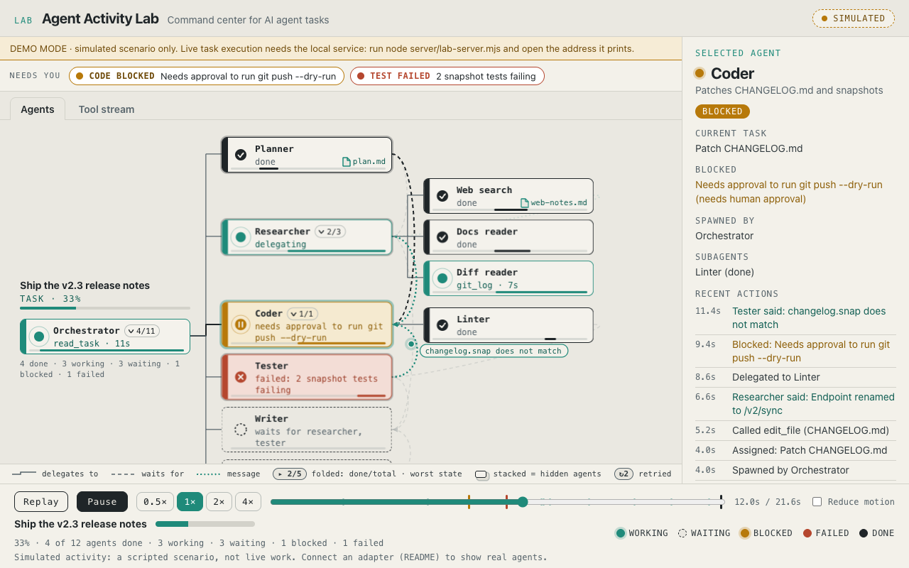

Agent Activity Lab
A local command center for AI agents. Type a task, press Run, and watch a real Claude Code session work: which agents are active, which tools they use, how work is handed off, what is blocked, and what it produces.
SIMULATED The demo below is a scripted run, clearly labelled. Live execution runs only on your own computer, with your own Claude Code login.
Open the demoDesign archiveGitHub

Run real tasks on your machine
git clone https://github.com/pomegranate692-creator/agent-activity-lab && cd agent-activity-lab claude auth login node server/lab-server.mjs
Then open the address it prints and press New task. The service is localhost-only and token-protected, runs each task in its own workspace folder with a tool allowlist and a budget cap, and saves every session locally. Details and limits: server/README.md.
What is verified
Service plumbing, security rules and the dashboard flow are tested with a clearly labelled test stub; the message mapping is tested on 1,552 real Claude Code message lines. A full real Claude Code run is not yet verified; a runnable check for it is included. See the README.